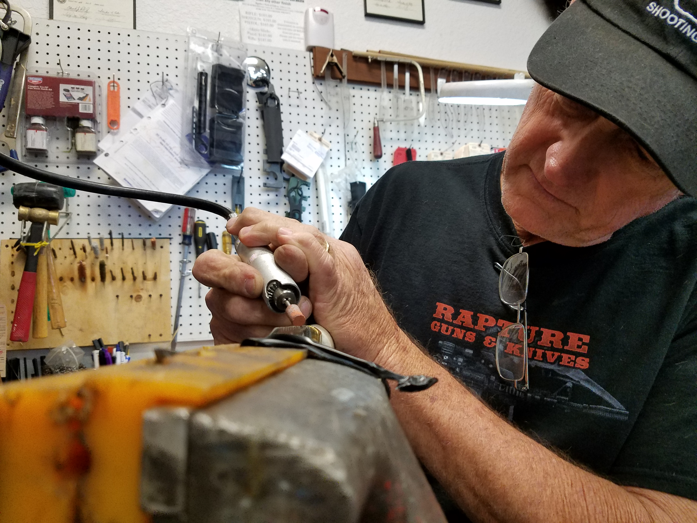

There's nothing quite like a good knife! At Rapture Guns & Knives, we have a wide and comprehensive selection of knives ranging from tactical fixed blades to popular pocket and assisted open blades to even custom made knives created right here at the store by our knifesmith, Richard.
We can also order virtually any knife you may be looking for that we don't have in stock.
Fixed blade knives are designed for dozens of applications, which include hunting knives, survival knives, combat knives, boot knives, dive knives, throwing knives and many more.
One of the most versatile and useful of all knives to have in your arsenal is a simple pocket knife. A good pocket knife is all you need for everything from basic tasks to self defense.
Assisted opening knives merge function and speed to create a mechanism that opens a blade as fast and smooth as a switchblade, and can be both tactical and everyday practical.
Looking for a fixed blade knife with a more individualized flare for yourself or as a gift for someone else? You should visit Rapture Guns & Knives and speak with Richard.
The scope of Richard's talent expands beyond just gunsmithing. Richard is also an incredible knifesmith with a solid 25 years of experience, which includes a lot of work with Damascus Steel.
In addition to designs and stylings on the blade, Richard can also provide you with beautiful custom work on handles, using materials like stag wood, micarta, G-10 and more.
Pricing starts at $130 for a basic, small bladed knife and increase from there depending on materials and labor. The general turn-around time is 2 - 4 weeks depending on the type of work to be done. Give us a call or, better yet, come visit us and speak with Richard in person.
